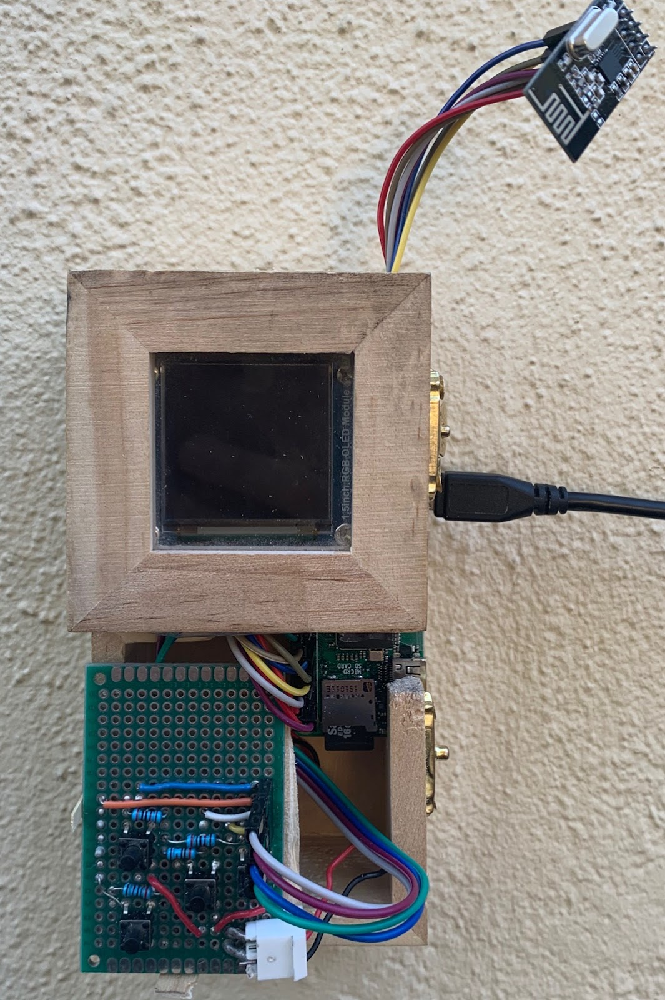
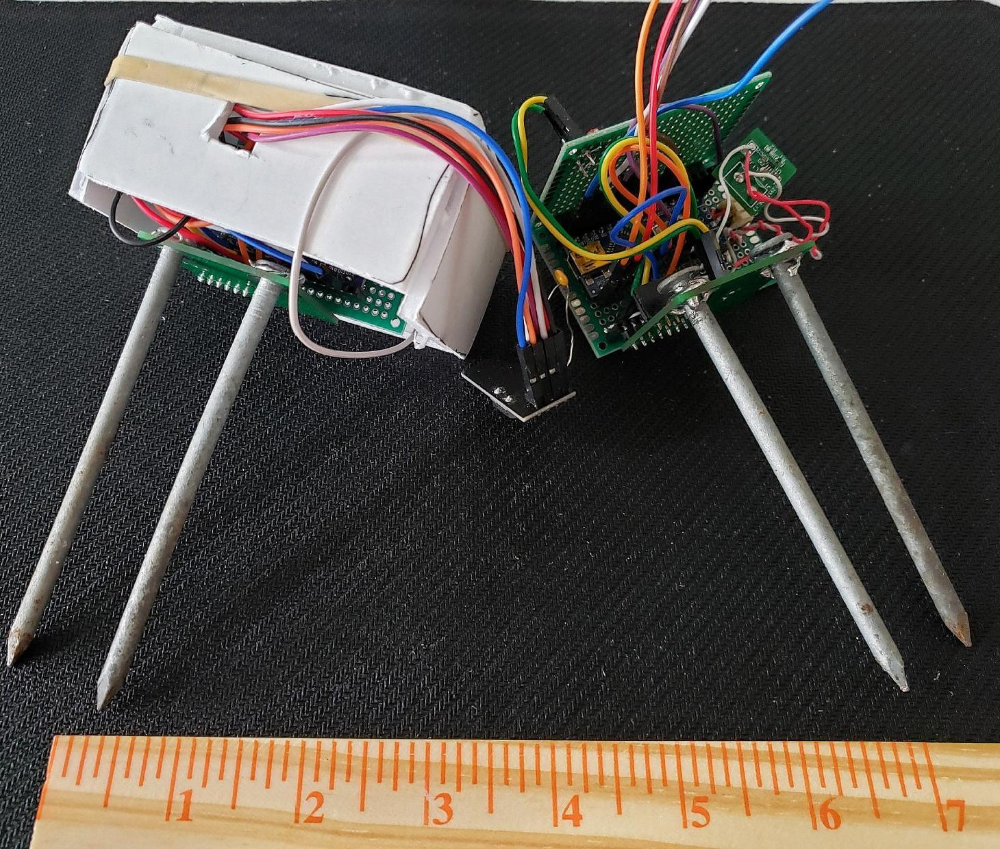
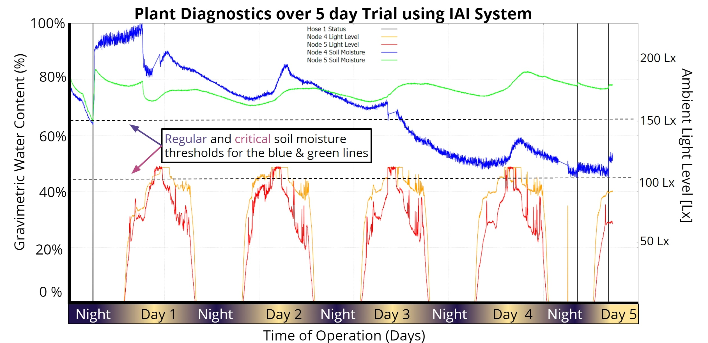
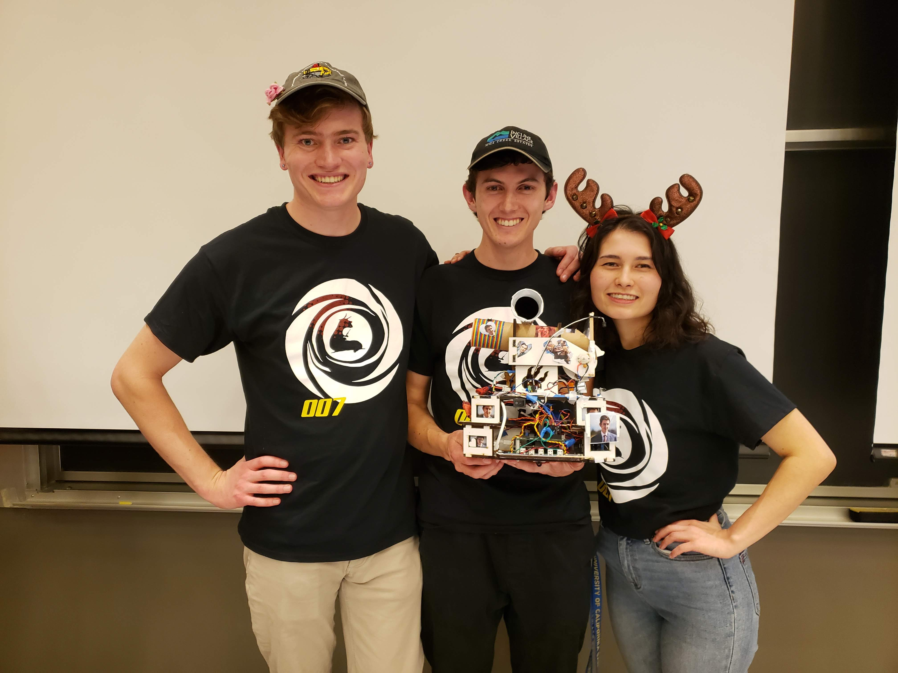
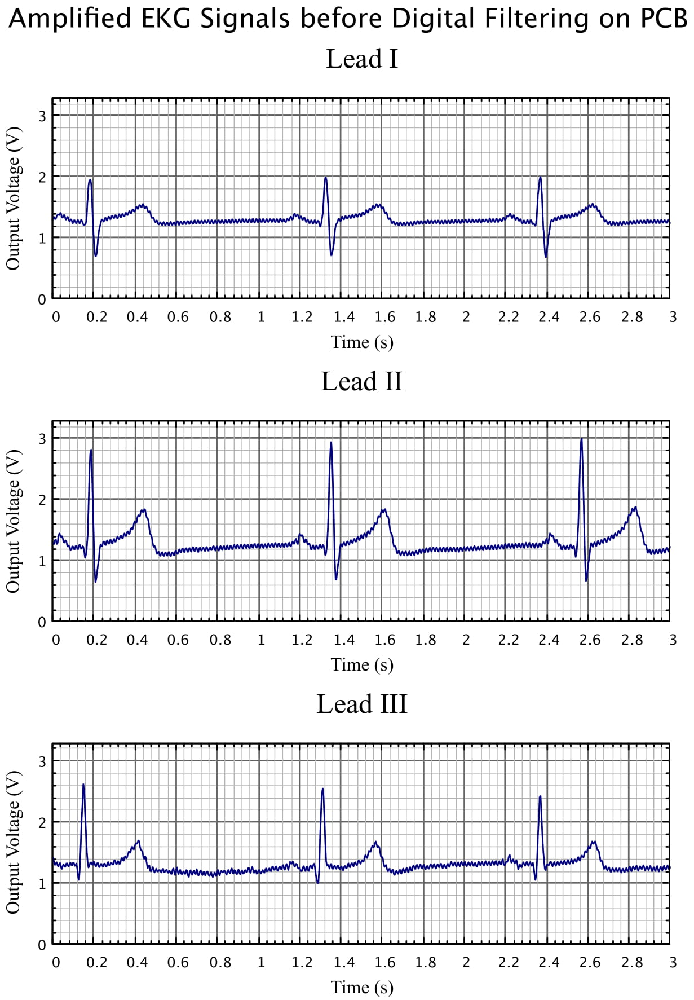
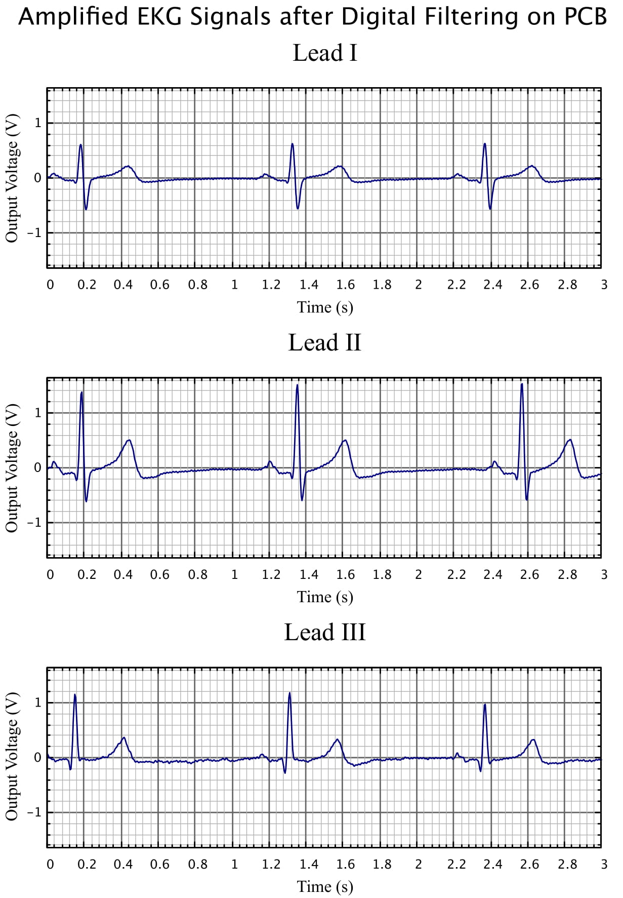

Acknowledging residential irrigation as a significant contributor to unnecessary wastewater, Grant and the Intuitive Auto-Irrigation team devised a water-efficient automatic irrigation system that uses an array of sensors and weather forecasting data to determine when to efficiently water plants and minimize water consumption. Through wireless communication, sensor arrays relay information to a central hub that collects environmental data and triggers water delivery when monitored soil is deemed dry and conditions are optimal for irrigation. The goal of the automatic irrigation system is to reduce unnecessary water consumption without sacrificing plant health, effectively leading to a more sustainable method of residential landscaping and gardening practices.
The Intuitive Auto Irrigation project started as a creative, side adventure in the summer of 2019. Grant initially wanted to learn how to use Arduino microcontrollers and apply concepts from one of his previous electronics class to something he respected, Nature. However, Grant quickly realized there was a lot more that goes into irrigation systems, especially autonomous versions, than just a simple microcontroller. Especially when trying to learn to be an engineer, Grant wanted the work to live up to professional engineering standards which meant the addition of significant time investment as well. So when the next quarter came around, Grant found the perfect opportunity to revisit this idea in his Senior Capstone Design course. The premise of this course is to have students come up with project ideas and divide into small teams, effectively simulating a coorporate-esque job with the teaching staff as 'company managers'. To his surprise, Grant found a team of 3, highly qualified engineers shortly after sharing his idea. Together forming a squad of 3 bioengineers and 1 electrical engineer, Grant finally had the man power to fulfill the project goals.


On the left, the final design of the Intuitive Auto Irrigation Central Hub sports a 4 push-button interface to control the 2.5" OLED screen. On the right, the final prototype design for the sensor nodes encased them in protoboards for limited water protection. Originally the team planned to 3D print an enclosure for them, but the on-campus 3D printer closed due to the pandemic. The final result still worked surprisingly well.
Settled with a team, the Banana Slug engineers worked together with the on-campus, Kresge Co-op Garden to come up with a set of top-down goals to orient the project in the right direction. During the planning stages, the team identified biggest challenges as the wireless communications, sensor arrays, the general central hub state machine, and the user interface. Starting with the wireless communications and the sensor arrays, these were considered large project milestones that significantly altered the state of the project once they were complete. Of these four major challenges, Grant worked primarily on the wireless comms and the central hub state machine while also helping out with the user interface.
To get the wireless communications working, Grant started out with getting two Arduinos communicating first. He initially struggled with figuring out what each pin did on the RF24 radio transceiver; but after some messing around, he was able to configure a master and slave network with a simplified version of the final communication protocol. To be clear, Grant had the help of the RF24 library authored by TMRh20. This library built the underlying framework in terms of handling the baseline transmission and reception of RF signals between devices. After getting the multi-node system working, Grant moved the central hub (the master node) to a Raspberry Pi Zero W, which was the final microcontroller choice for the central hub. This took some effort and Grant also started working on the central hub state machine at this point, and after a couple weeks of work, the central hub was able to communicate with the sensor network using the wireless radio transceivers. After that, it was just adding features and fine tuning the central hub to get the irrigation network to actually distribute water properly. This took a little bit of extra time because of the need for a multi-driver board to drive latching solenoid valves, but eventually everything worked as intended. The testing performed on the final system logged lots of environmental but the most interesting trends were the soil moisture content and light level.
Shown below are the data trends for soil moisture content and light levels for both sensors nodes tested.

The validation results highlight measured environmental trends for two distinct nodes. The trial was performed over 5 days and shows the efficacy of the Intuitive Auto Irrigation system. Soil moisture trends are shown in blue/green; light level trends are shown in red/orange.
In the image above, the soil moisture sensors kept track of the relative amount of moisture in the soil, which we were then compared against pre-set thresholds in order to determine if sufficient water was present in the system. The thresholds were deterined through empirical data after testing in multiple soil types; this would become one of the most challenging parts of our project as the sensor value changed significantly in differing soil types. Regardless, in our testing, we showed that the sytem is able to recognize when the soil conditions reach these different thresholds and responds accordingly, assuming other environmental conditions are also met. These responses are marked with vertical black lines that show when the hose turned on. These black lines then stayed on for a single 1 minute cycle after which, the soil moisture sensors reported higher soil moisture content.
In the end, we measured our project as using a total of 246mL for one week. Comparing this to the expected average of 567mL, we claim that our system reduces wastewater consumption in residential irrigation by up to 50%. This number can vary depending on the soil type and type of plant, but for a alpha test, we were both satisfied and suprised at the efficacy of the system.
The autonomous robot designed for my mechatronics course was a difficult and stressful undertaking. Similar to my senior thesis, we were placed in teams to create a finished product at the end of a set time frame. Except for this project, the teams were made of three people and we only have 3.5 weeks to complete. I ended up being the team lead for this project as I scored the highest on the midterm, which was used to decide teams. Our design needed to be able to complete the course set by the teaching staff in under 2 minutes. The obstacle course involved an 8ft x 8ft playing 'field' of white mdf outlined with black tape. In the center of the field, there was also a 1.5ft x 1.5ft square also outlined in black tape. Throughout the field, there were 3 towers, standing 1 ft tall, with three, square faces each. These towers then had 9 holes in them, 3 for each side, placed in a line 6inches from the ground. For each tower, there was only a single 'correct' hole which was marked by black tape on the tower's wall underneath the correct hole which also had to be on the correct face which was marked by an EM signal outlining the edge of the wall's face. Our robot then had to put a ball in the correct hole of 2 of the 3 towers within the time limit without placing any incorrect balls.

Team picture at UCSC's Fall 2019 Mechatronics Competition; from left to right: Kohl Grunt, Grant Skidmore, Janelle Chen. Our team placed 2nd in the overall competiton and 1st in the time trials with our robot submission.
This was not an easy task, especially in under two minutes, so we spent a lot of time planning and working on the physical design of the robot. We decided to stay with only two wheels located in the middle of the robot which allowed us to turn left and right without moving forward or backward. We also decided on a side-facing ball dispensing mechanism so that we could easily drive forward and backward parallel to the tower walls. As for sensors, we definitely needed at least 4 reflective infrared optical sensors to detct black vs white surfaces; we also needed a custom infrared light sensor to pick up 2kHz light pulses and a custom electromagnetic field detector to pick up 25-27kHz EM signals. For other sensors, we decided to use 4 physical switches for collision detection and 2 ultrasonic ping sensors for distance tracking. For motors, we picked up two 12V DC motors off Amazon with high torque and low rpm. This allowed our robot to go down to slower speeds than we would have otherwise been able to with higher rpm motors. Essentially we traded off high speed for low speed and more power.

Isometric view of the robot with the front of the robot on the left and the back of the robot on the right.
Our robot, as shown in the image above, has three layers to the chassis. The lowest layer is where we put most of the heavy components in order to create a lower center of gravity. The components here included the microcontroller, which was an Uno32 Microcontroller Board; the power distribution board, which had pinouts to connect all system components to 5V, 3.3V, or Gnd; 3 reflective infrared sensors, which were used to keep the bot on the playing field; the center bumper for collision detection; the driver board for the motors; and the motors themselves. The second layer then had the other 3 bumpers for collision detection, the pcb created for the 2kHz light sensor, and storage for the battery. The top layer had a small breakout board for power distribution, the two ultrasonic ping sensors, the side-mounted reflective optical sensor, the pcb for the EM sensor, and the ball dispensing mechanism which also housed the sensor for the EM sensor and the 2kHz light sensor. All three of these layers were made with Solidworks and then cut out of MDF using a laser cutter. To keep them all together, we used wood glue supported by hot glue and tape.
The robot was controlled by a depth-first hierarchichal state machine running on the
Uno32 Microcontroller Board. This state machine included four distinct states: The Top Level, Driving, Navigating Around the Tower, and Dispensing the Ball. These four state machines used the events and services framework created by J. Edward Carrayer of Stanford University to update the state machine on occurances from sensors and hardware peripherals. In addition to the 4 state machines, we had 4 services that generated events from the sensors. All the code was written in C and uploaded to the Uno32 using a custom bootloader created by one of the past TAs (Max Dunne).
One of the more difficult classes I took as an undergraduate was Analog Electronics for Bioengineers taught by Kevin Karplus. This class focused on applied electrical engineering, but performed in a bio-related environment. A prime example of this is the EKG monitor project. This project required us to develop a real-time EKG monitor using a system of 3 electroplated AgCl electrodes: one electrode was used for ground and two were used to generate a differential voltage signal. The voltage signal read from the two differential probes was passed through an intstrumentation amplifier, which fundamentally generates a single output from several inputs, and then passed through a series of filters and amplifiers to generate a clear and readable output.

EKG Monitor output before digital filtering shows a very clearly defined ECG complex. While the signal is clear from all placement of the electrodes, there is still noise and a voltage bias on the output; digital filtering attempts to clean this up.

The previous picture was run through a digital filtering script to clean out the electrical noise. The output shows very elegant ECG waves with virtually no noise.